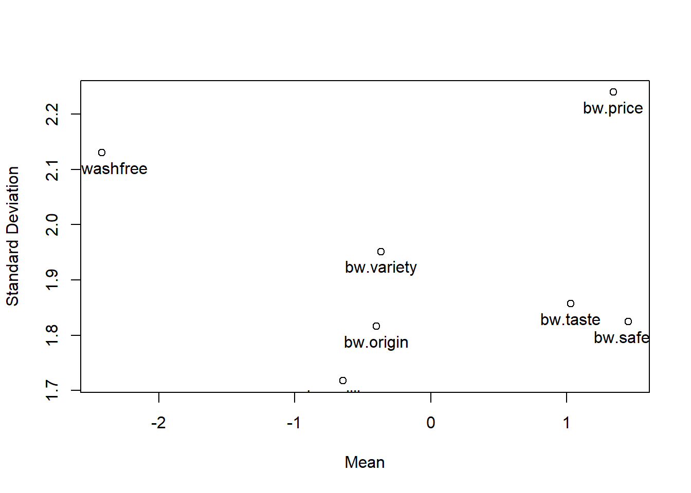
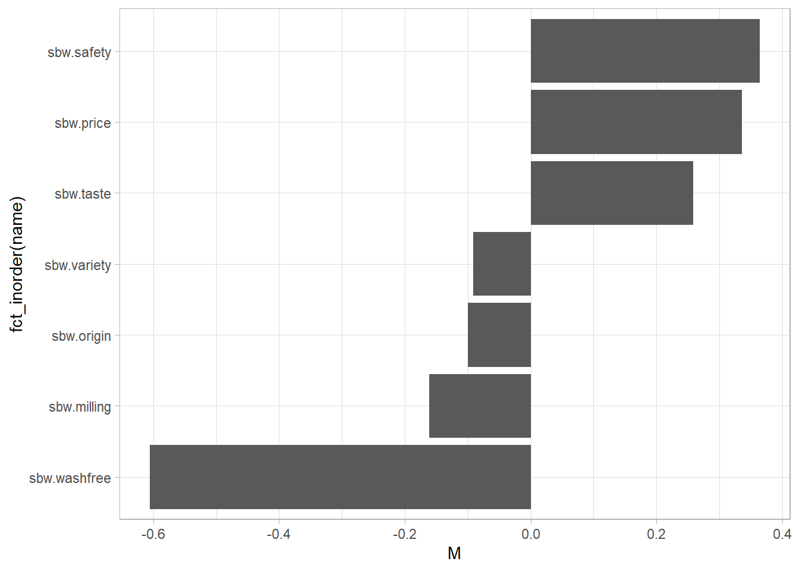

Show the code
items <- c("origin", "variety", "price", "taste", "safety", "washfree", "milling")
set.seed(8041)
bibd <- find.BIB(
trt = length(items),
b = length(items),
k = 4
)Best–worst scaling (BWS) is a method for measuring preferences among pre-defined items.1 BWS presents subsets of the items for evaluation, asking the respondent to identify the best and worst (or most important and least important) from the subset. BWS studies usually use a balanced incomplete block design (BIBD) to construct choice sets.
BIBD is a category of designs where trt treatments (items) are presented to the survey respondent in b blocks (survey questions) of k treatments (items). For example, seven items might be presented in seven survey questions with four of the items show in each question.
items <- c("origin", "variety", "price", "taste", "safety", "washfree", "milling")
set.seed(8041)
bibd <- find.BIB(
trt = length(items),
b = length(items),
k = 4
)The documentation for isGYD() explains design balance. A balanced block design has three qualities: i) Each treatment appears equally often. ii) Each treatment appears in each block either n or n+1 times (usually 0 or 1 times). iii) The concurrences of i and j are the same for all pairs of treatments (i, j). A design balanced with respect to both rows and columns is called a generalized Youden design (GYD). A design with less columns (rows) than treatments is incomplete with respect to rows (columns). That’s what you will have in a BWS. A design in which each treatment occurs once per row and column is a latin square. If each treatment occurs the same number of times per row and column, it is a generalized latin square.
isGYD(bibd)
[1] The design is a balanced incomplete block design w.r.t. rows.There are other design with a BIBD:
find.BIB(6, 10, 3) %>% isGYD() # 6 items shown in 10 blocks of 3
find.BIB(7, 7, 3) %>% isGYD() # 7 items shown in 7 blocks of 3
find.BIB(9, 12, 6) %>% isGYD() # 9 items shown in 12 blocks of 6
find.BIB(11, 11, 5) %>% isGYD() # 11 items shown in 11 blocks of 5
find.BIB(13, 13, 4) %>% isGYD() # 13 items shown in 13 blocks of 4
find.BIB(16, 16, 6) %>% isGYD() # 16 items shown in 16 blocks of 6The resulting questionaire might look like this.
bws.questionnaire(bibd, design.type = 2, item.names = items)
Q1
Best Items Worst
[ ] variety [ ]
[ ] price [ ]
[ ] taste [ ]
[ ] milling [ ]
Q2
Best Items Worst
[ ] origin [ ]
[ ] variety [ ]
[ ] price [ ]
[ ] washfree [ ]
Q3
Best Items Worst
[ ] origin [ ]
[ ] variety [ ]
[ ] safety [ ]
[ ] milling [ ]
Q4
Best Items Worst
[ ] variety [ ]
[ ] taste [ ]
[ ] safety [ ]
[ ] washfree [ ]
Q5
Best Items Worst
[ ] origin [ ]
[ ] price [ ]
[ ] taste [ ]
[ ] safety [ ]
Q6
Best Items Worst
[ ] price [ ]
[ ] safety [ ]
[ ] washfree [ ]
[ ] milling [ ]
Q7
Best Items Worst
[ ] origin [ ]
[ ] taste [ ]
[ ] washfree [ ]
[ ] milling [ ] Consider the following response data from a BIBD with 7 items shown in 7 blocks of 3. b1 is the item selected as best in question 1, w1 is the item selected as worst in question 1, etc. age, hp, and chem are respondent covariates.
data("ricebws1", package = "support.BWS")
dat <- ricebws1
glimpse(dat)Rows: 90
Columns: 18
$ id <int> 1, 2, 3, 4, 5, 6, 7, 8, 9, 10, 11, 12, 13, 14, 15, 16, 17, 18, 19…
$ b1 <int> 4, 2, 3, 2, 3, 2, 2, 3, 2, 3, 2, 2, 2, 2, 3, 2, 2, 3, 2, 3, 4, 2,…
$ w1 <int> 1, 4, 4, 1, 4, 4, 1, 4, 1, 4, 4, 4, 4, 4, 1, 1, 4, 1, 3, 1, 1, 1,…
$ b2 <int> 1, 3, 3, 3, 2, 3, 3, 2, 4, 3, 3, 1, 3, 3, 2, 3, 3, 1, 1, 1, 2, 3,…
$ w2 <int> 3, 4, 4, 4, 4, 4, 2, 4, 2, 4, 4, 4, 1, 4, 4, 4, 1, 4, 4, 4, 4, 4,…
$ b3 <int> 1, 3, 1, 3, 2, 1, 4, 1, 4, 1, 2, 3, 3, 1, 2, 3, 3, 3, 1, 1, 4, 4,…
$ w3 <int> 3, 4, 2, 2, 3, 2, 3, 4, 2, 4, 4, 2, 1, 4, 1, 2, 1, 2, 3, 2, 1, 2,…
$ b4 <int> 3, 3, 2, 3, 1, 2, 1, 3, 4, 2, 2, 2, 4, 3, 2, 3, 3, 2, 1, 2, 2, 2,…
$ w4 <int> 4, 4, 4, 4, 4, 4, 2, 4, 1, 4, 4, 4, 1, 4, 4, 4, 4, 4, 4, 4, 4, 4,…
$ b5 <int> 4, 2, 3, 2, 3, 2, 2, 4, 2, 3, 2, 4, 2, 2, 3, 2, 4, 3, 1, 1, 3, 2,…
$ w5 <int> 3, 1, 1, 3, 1, 1, 3, 1, 1, 1, 4, 1, 1, 1, 1, 1, 1, 2, 4, 4, 1, 4,…
$ b6 <int> 2, 1, 1, 1, 1, 1, 1, 2, 4, 1, 1, 2, 1, 1, 1, 1, 2, 2, 1, 1, 2, 1,…
$ w6 <int> 3, 3, 3, 3, 3, 3, 4, 3, 2, 3, 4, 4, 4, 4, 3, 3, 3, 3, 3, 3, 3, 3,…
$ b7 <int> 1, 2, 2, 1, 2, 2, 4, 2, 4, 2, 2, 2, 3, 2, 2, 2, 2, 1, 1, 2, 2, 4,…
$ w7 <int> 3, 3, 3, 3, 3, 3, 2, 3, 1, 3, 4, 3, 4, 4, 3, 3, 3, 3, 3, 3, 3, 3,…
$ age <int> 3, 1, 3, 1, 3, 1, 1, 3, 3, 2, 2, 2, 2, 3, 1, 2, 3, 1, 2, 2, 1, 2,…
$ hp <int> 2, 2, 2, 3, 2, 3, 1, 2, 2, 2, 3, 3, 2, 3, 3, 2, 1, 2, 3, 3, 3, 2,…
$ chem <int> 1, 1, 1, 0, 1, 1, 0, 1, 1, 1, 0, 1, 0, 1, 1, 0, 1, 1, 0, 0, 1, 0,…Convert each response into one row per possible best-worse pair. There are k(k-1) possible pairs, in this case 4x3=12 pairs. bws.dataset() lengthens the 90 rows to 90 x 7 questions x 12 possible pairs per question = 7,560 rows.
bws <- bws.dataset(
data = dat,
response.type = 1, # format of response variables: 1 = row number format
choice.sets = bibd,
design.type = 2, # BIBD
item.names = items,
id = "id", # respondent id variable
response = colnames(dat)[2:15], # response variables
model = "maxdiff" # type of dataset to create
)
# 90 respondents x 7 questions x 12 possible pairs per question
dim(bws)[1] 7560 19Question 1 presented items [variety, price, taste, milling]. Respondent id = 1 selected choice 4 (items[bibd[1, 4]] = milling) for the Best (b1) and choice 1 (items[bibd[1, 1]] = variety) for Worst (w1).
dat[1, ] id b1 w1 b2 w2 b3 w3 b4 w4 b5 w5 b6 w6 b7 w7 age hp chem
1 1 4 1 1 3 1 3 3 4 4 3 2 3 1 3 3 2 1The converted data set is easier to translate. Column RES = TRUE in row 10 indicates the pair the respondent selected. Best was item 7 (items[7] = milling) and the Worst was item 2 (items[2] = variety). You can also get that from the +1 and -1 indicators for milling and variety used for modeling.
bws %>% filter(id == 1, Q == 1) id Q PAIR BEST WORST RES.B RES.W RES origin variety price taste safety
1 1 1 1 2 3 7 2 FALSE 0 1 -1 0 0
2 1 1 2 2 4 7 2 FALSE 0 1 0 -1 0
3 1 1 3 2 7 7 2 FALSE 0 1 0 0 0
4 1 1 4 3 2 7 2 FALSE 0 -1 1 0 0
5 1 1 5 3 4 7 2 FALSE 0 0 1 -1 0
6 1 1 6 3 7 7 2 FALSE 0 0 1 0 0
7 1 1 7 4 2 7 2 FALSE 0 -1 0 1 0
8 1 1 8 4 3 7 2 FALSE 0 0 -1 1 0
9 1 1 9 4 7 7 2 FALSE 0 0 0 1 0
10 1 1 10 7 2 7 2 TRUE 0 -1 0 0 0
11 1 1 11 7 3 7 2 FALSE 0 0 -1 0 0
12 1 1 12 7 4 7 2 FALSE 0 0 0 -1 0
washfree milling STR age hp chem
1 0 0 101 3 2 1
2 0 0 101 3 2 1
3 0 -1 101 3 2 1
4 0 0 101 3 2 1
5 0 0 101 3 2 1
6 0 -1 101 3 2 1
7 0 0 101 3 2 1
8 0 0 101 3 2 1
9 0 -1 101 3 2 1
10 0 1 101 3 2 1
11 0 1 101 3 2 1
12 0 1 101 3 2 1You can see below that respondent 1 selected item 1 (origin) Best three times, item 5 (safety) Best three times, and item 7 (milling) Best once. Respondent 1 selected items 2 (variety), 3 (price), 4 (taste), and 5 (safety) Worst once and item 6 (washfree) worst three times.
bws %>%
filter(id == 1, RES == TRUE) %>%
gtsummary::tbl_cross(BEST, WORST)|
WORST |
Total |
|||||
|---|---|---|---|---|---|---|
2 |
3 |
4 |
5 |
6 |
||
| BEST | ||||||
| 1 | 0 | 1 | 0 | 1 | 1 | 3 |
| 5 | 0 | 0 | 1 | 0 | 2 | 3 |
| 7 | 1 | 0 | 0 | 0 | 0 | 1 |
| Total | 1 | 1 | 1 | 1 | 3 | 7 |
bws.count() calculates counts for (b)est, (w)orst, best-minus-worst (bw), and standardized bw (sbw = bw / number of levels) for each item.
bws_count <- bws.count(bws, cl = 2)
dim(bws_count)[1] 90 32bws_count %>% filter(id == 1) %>% glimpse()Rows: 1
Columns: 32
$ id <dbl> 1
$ b.origin <dbl> 3
$ b.variety <dbl> 0
$ b.price <dbl> 0
$ b.taste <dbl> 0
$ b.safety <dbl> 3
$ b.washfree <dbl> 0
$ b.milling <dbl> 1
$ w.origin <dbl> 0
$ w.variety <dbl> 1
$ w.price <dbl> 1
$ w.taste <dbl> 1
$ w.safety <dbl> 1
$ w.washfree <dbl> 3
$ w.milling <dbl> 0
$ bw.origin <dbl> 3
$ bw.variety <dbl> -1
$ bw.price <dbl> -1
$ bw.taste <dbl> -1
$ bw.safety <dbl> 2
$ bw.washfree <dbl> -3
$ bw.milling <dbl> 1
$ sbw.origin <dbl> 0.75
$ sbw.variety <dbl> -0.25
$ sbw.price <dbl> -0.25
$ sbw.taste <dbl> -0.25
$ sbw.safety <dbl> 0.5
$ sbw.washfree <dbl> -0.75
$ sbw.milling <dbl> 0.25
$ age <int> 3
$ hp <int> 2
$ chem <int> 1plot() shows the relationship between the level means and standard deviations. Price, taste, and safety are similarly important, but price has a higher standard deviation, meaning its importance varies.
plot(bws_count, score = "bw")
The column plot shows the item ranks.
bws_count %>%
select(id, starts_with("sbw")) %>%
pivot_longer(cols = -id) %>%
group_by(name) %>%
summarize(.groups = "drop", M = mean(value)) %>%
arrange(M) %>%
ggplot(aes(y = fct_inorder(name), x = M)) +
geom_col()
Fit a conditional logit model. A simple model uses the dummy vars, excluding one (washfree) to avoid singularity. The last term “- 1” means that the model has no alternative-specific constants. Use dfidx() to convert the data into a format appropriate for the model.
fmla <- RES ~ origin + variety + price + taste + safety + milling - 1
bws_dfidx <- dfidx(bws, idx = list(c("STR", "id"), "PAIR"), choice = "RES")
mlogit_fit <- mlogit(formula = fmla, data = bws_dfidx)
summary(mlogit_fit)
Call:
mlogit(formula = RES ~ origin + variety + price + taste + safety +
milling - 1, data = bws_dfidx, method = "nr")
Frequencies of alternatives:choice
1 2 3 4 5 6 7 8
0.036508 0.095238 0.082540 0.119048 0.123810 0.122222 0.098413 0.053968
9 10 11 12
0.147619 0.053968 0.030159 0.036508
nr method
5 iterations, 0h:0m:0s
g'(-H)^-1g = 8.32E-06
successive function values within tolerance limits
Coefficients :
Estimate Std. Error z-value Pr(>|z|)
origin 1.13096 0.11785 9.5969 < 2.2e-16 ***
variety 1.10765 0.11615 9.5364 < 2.2e-16 ***
price 2.01292 0.12565 16.0205 < 2.2e-16 ***
taste 1.84700 0.12378 14.9213 < 2.2e-16 ***
safety 2.07194 0.12622 16.4156 < 2.2e-16 ***
milling 0.96028 0.11494 8.3546 < 2.2e-16 ***
---
Signif. codes: 0 '***' 0.001 '**' 0.01 '*' 0.05 '.' 0.1 ' ' 1
Log-Likelihood: -1318bws.sp() shows the shares of preference.
# Specify the name of the base since it isn't in model.
(bws_sp <- bws.sp(mlogit_fit, base = "washfree")) origin variety price taste safety milling washfree
0.09835520 0.09608950 0.23759085 0.20126594 0.25203440 0.08292247 0.03174165 Safety was most important and was 0.252 / 0.238 = 1.0607917 times as important as the second place price.
This model isn’t a great fit, unfortunately. You cannot pull the McFadden’s R-squared easily, but the calculation is straight-forward.
ll0 <- -90 * 7 * log(12) # log-likelihood at zero
llb <- as.numeric(mlogit_fit$logLik)
1 - (llb/ll0) # McFadden's R-squared
## [1] 0.1580881
1 - ((llb-6)/ll0) # Adjusted McFadden's R-squared
## [1] 0.1542554A possible improvement is the random parameters logit model.
fmla_rp <- RES ~ origin + variety + price + taste + safety + milling - 1 | 0
mlogit_rp_fit <- mlogit(
fmla_rp,
bws_dfidx,
rpar = c(origin = "n", variety = "n", price = "n", taste = "n", safety = "n", milling = "n"),
R = 100,
halton = NA,
panel = TRUE
)
summary(mlogit_rp_fit)
Call:
mlogit(formula = RES ~ origin + variety + price + taste + safety +
milling - 1 | 0, data = bws_dfidx, rpar = c(origin = "n",
variety = "n", price = "n", taste = "n", safety = "n", milling = "n"),
R = 100, halton = NA, panel = TRUE)
Frequencies of alternatives:choice
1 2 3 4 5 6 7 8
0.036508 0.095238 0.082540 0.119048 0.123810 0.122222 0.098413 0.053968
9 10 11 12
0.147619 0.053968 0.030159 0.036508
bfgs method
24 iterations, 0h:0m:8s
g'(-H)^-1g = 9.32E-07
gradient close to zero
Coefficients :
Estimate Std. Error z-value Pr(>|z|)
origin 1.74079 0.15489 11.2386 < 2.2e-16 ***
variety 1.78710 0.15324 11.6624 < 2.2e-16 ***
price 3.98883 0.24281 16.4277 < 2.2e-16 ***
taste 3.09265 0.19980 15.4787 < 2.2e-16 ***
safety 3.62784 0.19816 18.3078 < 2.2e-16 ***
milling 1.63816 0.16366 10.0093 < 2.2e-16 ***
sd.origin 1.66733 0.17842 9.3451 < 2.2e-16 ***
sd.variety 1.86579 0.17869 10.4414 < 2.2e-16 ***
sd.price 2.68927 0.23760 11.3186 < 2.2e-16 ***
sd.taste 2.00738 0.18984 10.5740 < 2.2e-16 ***
sd.safety 1.95473 0.21113 9.2584 < 2.2e-16 ***
sd.milling 1.60534 0.18671 8.5983 < 2.2e-16 ***
---
Signif. codes: 0 '***' 0.001 '**' 0.01 '*' 0.05 '.' 0.1 ' ' 1
Log-Likelihood: -1093.1
random coefficients
Min. 1st Qu. Median Mean 3rd Qu. Max.
origin -Inf 0.6161939 1.740794 1.740794 2.865394 Inf
variety -Inf 0.5286426 1.787098 1.787098 3.045554 Inf
price -Inf 2.1749395 3.988827 3.988827 5.802715 Inf
taste -Inf 1.7386952 3.092652 3.092652 4.446608 Inf
safety -Inf 2.3093963 3.627839 3.627839 4.946282 Inf
milling -Inf 0.5553767 1.638164 1.638164 2.720951 InfMcFadden’s R-squared increased substantially.
llb_rp <- as.numeric(mlogit_rp_fit$logLik)
1 - (llb_rp/ll0) # McFadden's R-squared
## [1] 0.3017665
1 - ((llb_rp-6)/ll0) # Adjusted McFadden's R-squared
## [1] 0.2979339# Specify the name of the base since it isn't in model.
(bws_rp_sp <- bws.sp(mlogit_rp_fit, base = "washfree", coef = items[-6])) origin variety price taste safety milling
0.043367459 0.045422777 0.410650578 0.167597772 0.286218165 0.039137418
washfree
0.007605832 Now (surprisingly?), price is most important and was 0.411 / 0.286 = 1.4347467 times as important as the second place safety.
Notes are from http://lab.agr.hokudai.ac.jp/nmvr/03-bws1.html.↩︎